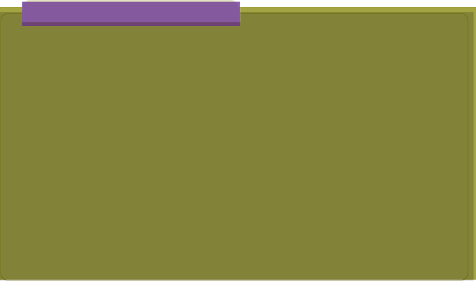

Materials: Computer or laptop with Python and IDLE installed, or access to an online Python compiler (such as, https://replit.com, Programiz), a notebook, and pen/pencil for planning
Instructions:
1. Open your Python environment (IDLE or an online compiler).
2. Create a new Python file or script.
3. Write a program that:
(i)
Picks a random number between 1 and 100.
(ii) Waits for 2 seconds before continuing.
(iii) Calculates and displays the square root of the number.
4. Use the following Python modules:
(i) random to generate the number.
(ii) time to pause the program.
(iii) math to calculate the square root.
5. Run the program and observe the output.
Deliverable: A short written report describing the function of each module used in
a working Python program. The program should run without errors, correctly use
all three modules, and pause before displaying a random number and its square root.
Document all your work in a portfolio.

Exercise 5.10
1. Explain what a Python library is and provide an example of a commonly used library. How does importing a module from a library help in programming?
2. Write a Python program that imports the math module and calculates the square root of 144. Then, explain the output of the program.
3. Describe how to use the random module to generate a random number between 1 and 50. Write the code for this and explain how it works.
4. How would you import only the sqrt() function from the math module? Write a program to find the square root of 81 using this method.
5. Create a simple Python module (file) with a function that greets a user by their name. Then, write a Python script to import and use that function to greet someone. Explain how importing works.